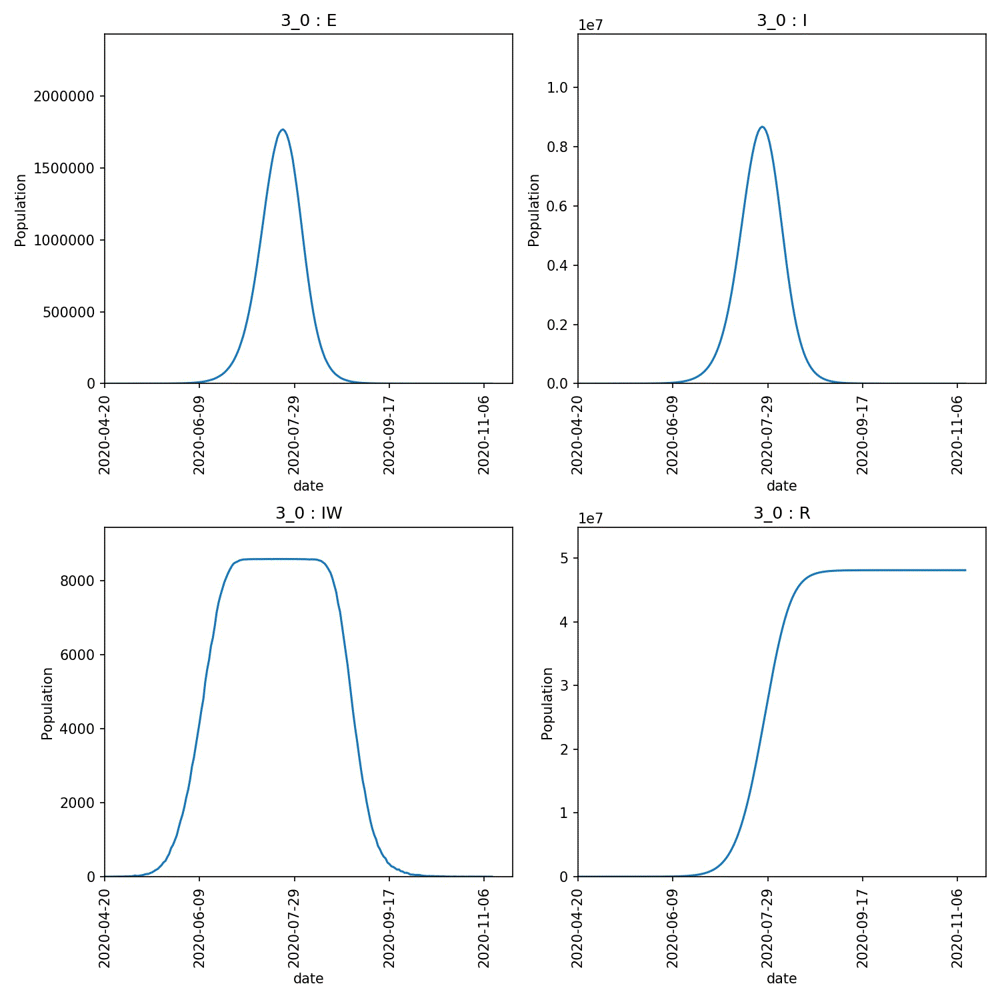

Analysing the output¶
The results.csv.bz2 file contains all of the population trajectories
from the nine model runs. You can explore this using Python pandas, R,
or Excel as you did before. Using
ipython or Jupyter notebooks with pandas, we can load up the file;
>>> import pandas as pd
>>> df = pd.read_csv("output/results.csv.bz2")
>>> print(df)
fingerprint repeat beta[2] too_ill_to_move[2] day date S E I R IW UV
0 0i3v0i0 1 0.3 0.0 0 2020-05-12 56082077 0 0 0 0 1.0
1 0i3v0i0 1 0.3 0.0 1 2020-05-13 56082077 0 0 0 0 1.0
2 0i3v0i0 1 0.3 0.0 2 2020-05-14 56082072 5 0 0 0 1.0
3 0i3v0i0 1 0.3 0.0 3 2020-05-15 56082072 0 5 0 0 1.0
4 0i3v0i0 1 0.3 0.0 4 2020-05-16 56082066 0 5 6 5 1.0
... ... ... ... ... ... ... ... .. .. ... .. ...
1769 0i5v0i5 1 0.5 0.5 169 2020-10-28 6302422 1 0 49779654 0 1.0
1770 0i5v0i5 1 0.5 0.5 170 2020-10-29 6302422 0 1 49779654 0 1.0
1771 0i5v0i5 1 0.5 0.5 171 2020-10-30 6302422 0 1 49779654 0 1.0
1772 0i5v0i5 1 0.5 0.5 172 2020-10-31 6302422 0 1 49779654 0 1.0
1773 0i5v0i5 1 0.5 0.5 173 2020-11-01 6302422 0 0 49779655 0 1.0
[1774 rows x 12 columns]
This is very similar to before, except now we have extra columns giving
the values of the variables that are being adjusted (columns
beta[2] and too_ill_to_move[2]. We also now have a use for the
fingerprint column, which contains a unique identifier for each
pair of adjustable variables.
Note
In the fingerprint the i character represents a decimal point
and v separates variables. For example 0.3 0.0 becomes
0i3v0i0, while 0.5 0.5 becomes 0i5v0i5.
Finding peaks¶
We can use .groupby to group the results with the same fingerprint
together. Then the .max function can be used to show the maximum
values of selected columns from each group, e.g.
>>> df.groupby("fingerprint")[["day", "E","I", "IW", "R"]].max()
day E I IW R
fingerprint
0i3v0i0 223 1867602 9124999 8588 48107545
0i3v0i25 213 1806030 8849753 8588 48080295
0i3v0i5 203 1925482 9373635 8588 48050991
0i4v0i0 191 1926941 9441320 8588 49044169
0i4v0i25 209 2013614 9815751 8588 49007451
0i4v0i5 196 2049927 9994566 8588 48979256
0i5v0i0 177 2108287 10278260 8588 49861436
0i5v0i25 180 2093600 10215078 8588 49814876
0i5v0i5 173 2070325 10128212 8588 49779655
From this, we can see that higher peaks occured for higher values of beta, which is expected. However, different values of too_ill_to_move had little impact on the peaks.
Warning
Do not over-interpret the results of single runs, such as the above. There is a lot of random error in these calculations and multiple model runs must be averaged over to gain a good understanding.
Plotting the output¶
There are lots of plots you would likely want to draw, so it is recommended
that you use a tool such as R, Pandas or Excel to create the plots that
will let you explore the data in full. For a quick set of plots, you
can again use metawards-plot to generate some overview plots. To
do this type;
metawards-plot -i output/results.csv.bz2 --format jpg --dpi 150
Note
We have used the ‘jpg’ image format here are we want to create animations.
You can choose from many different formats, e.g. ‘pdf’ for publication
quality graphs, ‘png’ etc. Use the --dpi option to set the
resolution when creating bitmap (png, jpg) images.
As there are multiple fingerprints, this will produce multiple overview graphs (one overview per fingerprint, and if you have run multiple repeats, then one average per fingerprint too).
The fingerprint value is included in the graph name, and they will
all be plotted on the same axes. This means that they could be joined
together into an animation. As well as plotting, metawards-plot has
an animation mode that can be used to join images together. To run this,
use;
metawards-plot --animate output/overview*.jpg
Note
You can only animate image files (e.g. jpeg, png). You can’t animate pdfs (yet - although pull requests welcome). Also, animation relies on you installing Pillow to create the gifs and (optional but recommended) gifsicle and pygifsicle to optimise the gifs (this reduces their size by 5-10 times)
Here is the animation.
Jupyter notebook¶
In addition, to the metawards-plot command, we also have a
Jupyter notebook
which you can look at which breaks down exactly how metawards-plot
uses pandas and matplotlib to render multi-fingerprint graphs.